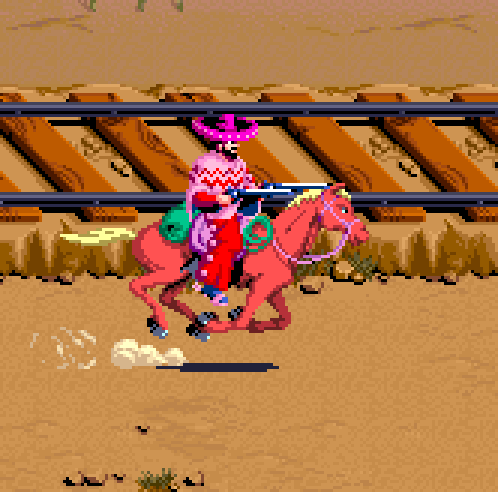

Em busca do Rustler & Thief R.R.
Você segue caminho até a linha férrea, pelas informações que você recebeu será hoje que o trem
Rustler & Thief R.R. passará por estas redondezas.
Você se posiciona em um lugar estratégico para poder observar a vinda de trens de uma distancia
segura.
Após algumas horas você identifica um trem com todas as descrições que o capanga lhe
informou, porém, este trem que vem têm em seus vagões o nome Cran & Pew R.R., este
segue para uma bifurcação nos trilhos tomando outro caminho.
O que você deseja fazer?
